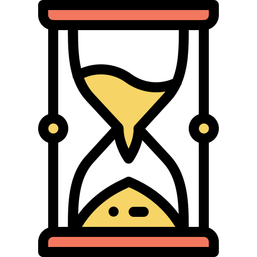
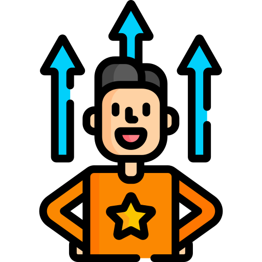
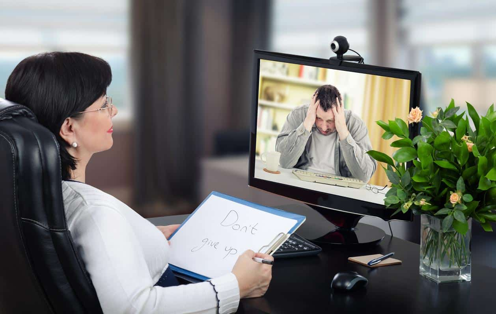

¿Qué es la plataforma Psico-Online?
Psico-Online es una plataforma online dedicada a los servicios y prestaciones de Psicooncología y Psicoterapia individual desde la línea cognitivo-conductual (TCC Individual), liderada por la Licenciada en Psicología Giuliana Maggioni.
La característica principal de esta plataforma es que ambas prestaciones se ofrecen de manera online. Aunque también, pueden brindarse de forma presencial en el consultorio de la profesional.
Psico-Online surge con el fin de brindar terapia online en tiempos de pandemia, debido a que la emergencia social y sanitaria nos hizo perder de vista que la salud no se reduce únicamente a prevenir y curar afecciones físicas observables en el cuerpo humano.
La salud incluye el bienestar como algo global, y eso implica que no podemos olvidar algo tan importante como la salud mental, especialmente ante contextos capaces de hacernos afrontar situaciones muy díficiles y estresantes.

La psicología oncológica es una rama de la psicología encargada del estudio y la psicoterapia de los pacientes con cáncer, así como de sus familias, que les ofrece las herramientas necesarias para afrontar el diagnóstico y el tratamiento de cualquier tipo de cáncer.
Mediante la psicoterapia oncológica, el terapeuta orienta y da apoyo emocional al paciente en todas las etapas de la enfermedad, sobre todo para la adaptación a los trastornos psicológicos y físicos que comportan los tratamientos y operaciones quirúrgicas (como por ejemplo, la caída del cabello provocada por la quimioterapia, o la extirpación mamaria en el caso del cáncer de mama).
Además, en el caso de que el tipo de cáncer o su detección tardía no permitan un diagnóstico ni un tratamiento esperanzador ni curativo del paciente, la psicología oncológica se ocupa del acompañamiento y orientación de los familiares durante todo el proceso de la enfermedad y del duelo, detectando el desarrollo de reacciones patológicas propias de este tipo de procesos.
La psicoterapia individual es el tratamiento a través de métodos psicológicos de problemas de naturaleza emocional, en donde una persona (el paciente) establece deliberadamente una «relación profesional» con otra persona (el psicólogo) que le ayudará a remover y modificar síntomas de malestar ya existentes, prevenir algunos otros, mediatizar comportamientos y promover el crecimiento personal.
Es un espacio para pensar, evaluar y tratar temas que generan sufrimiento, resolver conflictos, liberar cargas y crecer personalmente.
La Psicoterapia Individual tiene como objetivo abrirse al Terapeuta para ayudarte a alcanzar una mejor relación contigo mismo, comprender el por qué caemos una y otra vez en lo mismo y de esta manera tomar la dirección correcta de nuestra vida.
Básicamente, es estimular pensamientos, sentimientos y sensaciones que tiene una persona, pero que no sabe como aplicarlos o no sabe identificarlos.
Las ventajas de utilizar Psico-Online
1Nos da tiempo para otras cosas
Tener un hueco en la agenda para ir al psicológo no sólo implica estar ocupados el tiempo de la sesión: también hay que tener previsto el tiempo del desplazamiento en la ida y la vuelta. La terapia psicológica online ayuda a que dispongamos de más tiempo, porque no hace falta desplazarse para ir al consultorio.
2No hay límites geográficos

La distancia entre uno mismo y el psicólogo deja de ser un problema por el que preocuparse. En la psicoterapia online, da igual la distancia que nos encontremos del consultorio.
3Puede ayudarte a ahorrar
Al no requerir tantos recursos materiales ni un modelo de recepción de pacientes en el consultorio o en el centro de psicología, la psicoterapia online puede servir para abaratar costos.
4Ofrece un enterno de confianza
Hay pacientes para los que el simple hecho de expresar sus problemas y contar aspectos personales de sus vidas les resulta un problema, especialmente si sienten que estan en un lugar en el que no conocen. La terapia online permite asistir a las sesiones en un entorno que nos resulta familiar: nuestra propia casa.
Descubrí las herramientas de Psico-Online
Sesiones online
Accedé a las prestaciones mediante videollamadas, chat y telefonía
Atención individual
Podés tomar tu sesión 100% online. Desde el dispositivo que quieras en el lugar que quieras
Terapia grupal
Esta modalidad permite verte reflajado en otras personas
Flexibilidad horaria

Se dispone de una amplia disponibilidad de horarios y flexibilidad, para que puedas realizar tus sesiones en los momentos que te resulte mas apropiado y conveniente
Accesibilidad

Se facilita acceso a atención psicológica a todas aquellas personas que poseen una dificultad que les imposibilita trasladarse físicamente al consultorio
Profesionalidad

Soy psicóloga matriculada, con experiencia en atención online
Inicia tu sesión online en pocos pasos

Agendas un turno
Reservas la primera sesión de orientación y asesoramiento

Contactas
Comienzas tus sesiones online
Nos enfocamos en tu salud y bienestar
Accedes a la prestación de psicología que necesites y continúas con el proceso hacia tu bienestar
¿Cuánto cuesta una sesión de terapia online?
Comprá las sesiones de terapia que necesites, cuando lo necesites y trabajá junto conmigo para encontrar tu mejor versión
COMENZAR AHORASesión individual
2000 ARS
Sesión por videollamada de 45 minutos
Sesión grupal
1800 ARS
Sesión por videollamada de 45 minutos